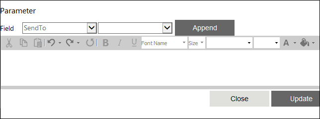

You can set the input parameters that are to be passed to the executable in this property window. To open this window, click the button for the 'Parameter' property.

Shell Parameter property
The window has a text editor to enter the parameters. You can do this either by entering a discrete value directly in the text editor or by using the Field controls at the top of the window. These controls are described below:
The Value type drop down - You can select the type of value here. You can specify Variable, Content, Value or XML Variable here.
The Value text box/drop down - You can specify the actual value of the parameter. The control displayed depends on the option selected in the first drop down. If you had selected "Value", it will display a text box here. You can enter the parameters in this box. If you had selected "Variable", "Content", or "XMLVariables" instead, there will be a drop down instead of the field. This drop down will have the variable collection or content collection or XMLVariables collection from which you can select an appropriate option to assign the parameters.
Append - You can click on this button to add the specified value, variable or content to the text editor.
The text tool bar above the text editor allows you to manage and format the parameter details. It has the following text tools –
Cut (Ctrl+X) - to cut text
Copy (Ctrl+C) - to copy text
Paste (Ctrl+V) - to oaste text
Undo (Ctrl+Z) - to undo the last action
Redo (Ctrl+Y) - to undo the last action
Repeat Last Command (F4) - to repeat the last command that was executed
It also has the following formatting & other tools –
Bold (Ctrl+B) - to make text bold
Italic (Ctrl+I) - to italicize text
Underline (Ctrl+U) - to underline text
Font Name - to select the font for the parameter
Size - to specify the font size
Paragraph Style - to select a paragraph style
Zoom - to zoom in and zoom out the view
Foreground Color - to set text color
Background Color - to set the background color
Print - to print the text
At the bottom of the window, you will find the following buttons:
Update - You can click this button to save the parameter.
Close - You can click this button to close this window.